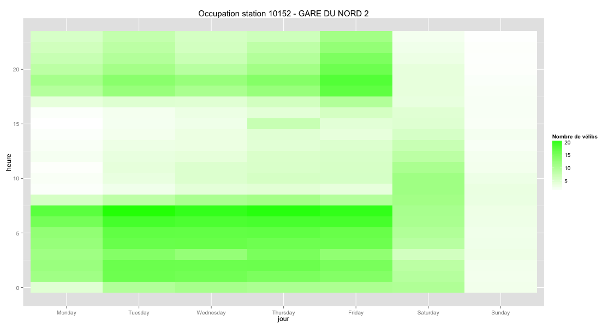

Analyses statistiques sur les vélibs
Vélib' est le système de vélos en libre-service de Paris disponible depuis 2007. En plus d'être très pratique pour le déplacement, l'analyse de l'utilisation de ce service est plutôt sympathique.
Ce projet (velibs.github.io) a pour objectif de fournir er d'analyser des statistiques sur l'utilisation des vélibs.
Au fur et à mesure de notre travail, nous partagerons sur cette page les graphiques et autres réalisations qui seront librement exploitables par tous.
Nous avons récupéré un historique des données d'occupation des stations Vélib'.
Nous avons des données de 2007 à 2014 mais non homogènes. Ces dernières années, une API officielle fournie par JCDecaux permet de récupérer les données. Précédement, les données étaient récupérees par un scraping régulier.
Pour l'instant, nous analyserons seulement les données des stations qui ont été enregistrées après le 1er juillet 2013.
La première analyse sur laquelle nous avons travaillé concerne le remplissage des stations vélibs, c'est-à-dire le nombre de vélibs disponibles sur chaque station.
Nous avons réalisé pour chaque station une heat map qui mesure le nombre de vélib moyen sur environ une année en fonction du jour de semaine (lundi, mardi...) et de l'heure. Cela permet de se faire une bonne idée de l'heure à laquelle on peut trouver ou pas un vélib pour chaque station.
Exemple pour une station :
